Tiancheng ZhiResearch Scientist at ByteDanceEmail: tiancheng.zhi@bytedance.com [Google Scholar] [GitHub] |
About Me
- I'm a research scientist at ByteDance focusing on image and video generation.
- Before joining ByteDance, I was a PhD student at Computer Science Department, Carnegie Mellon University, co-advised by Prof. Srinivasa Narasimhan and Prof. Martial Hebert.
- Prior to coming to CMU, I earned my B.S. degree from School of EECS, Peking University in 2016, under the supervision of Prof. Ling-Yu Duan.
Selected Products
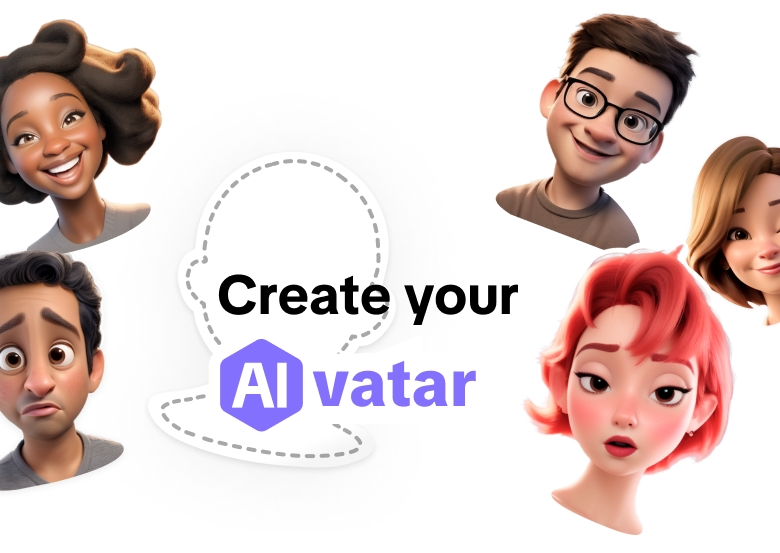 |
TikTok AI-Moji, 2024 Cartoonish avatar stickers with expressive expressions |
 |
TikTok AI Self, 2024 Create personalized photorealistic portraits with free prompting |
| Qingyan AI Photo (轻颜AI写真), 2023 Create personalized photorealistic portraits in 20 minutes, with 5-20 images |
|
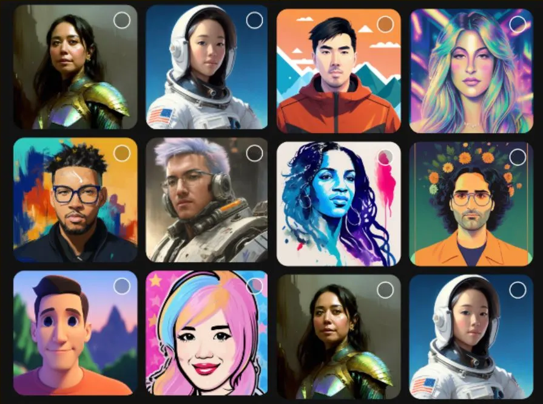 |
TikTok AI Avatar, 2023 Create AIGC profile pictures from 3-10 photos in minutes |
| TikTok AI Portrait, 2022 Sticker effect creating AIGC portrait in seconds with one single selfie |
|
| TikTok Avatar, 2022 Personalized 3D avatar with realtime expression tracking |
Selected Publications
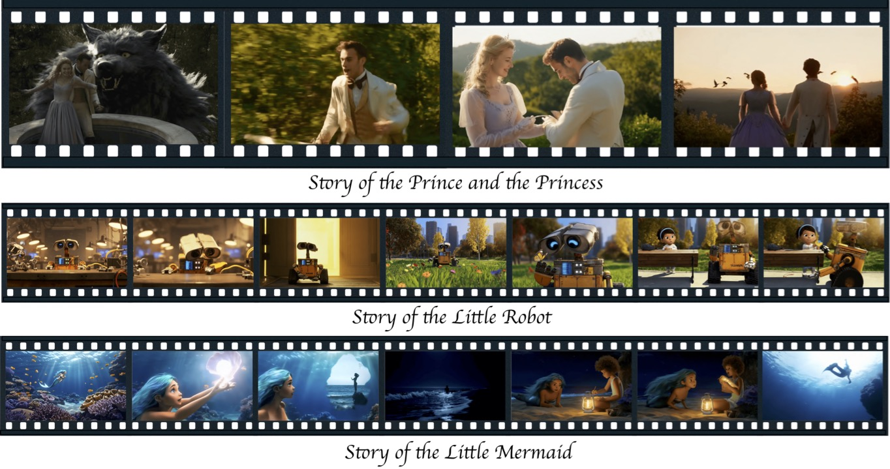 |
StoryMem: Multi-shot Long Video Storytelling with Memory Kaiwen Zhang, Liming Jiang, Angtian Wang, Jacob Zhiyuan Fang, Tiancheng Zhi, Qing Yan, Hao Kang, Xin Lu, Xingang Pan Tech Report [arXiv] [Project] |
 |
Lynx: Towards High-Fidelity Personalized Video Generation Shen Sang*, Tiancheng Zhi*, Tianpei Gu, Jing Liu, Linjie Luo CVPR 2026 [arXiv] [Project] |
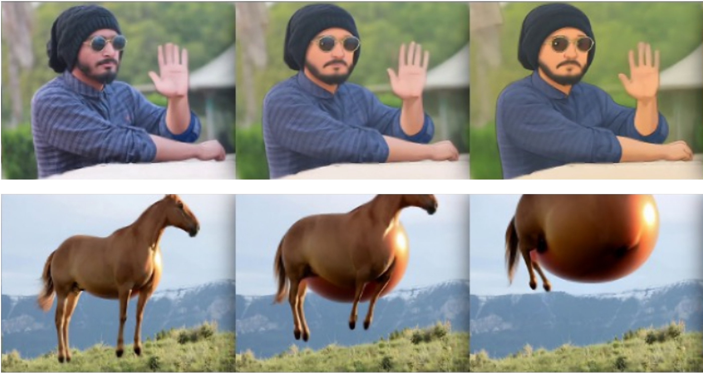 |
Video-As-Prompt: Unified Semantic Control for Video Generation Yuxuan Bian, Xin Chen, Zenan Li, Tiancheng Zhi, Shen Sang, Linjie Luo, Qiang Xu ICLR 2026 [arXiv] [Project] |
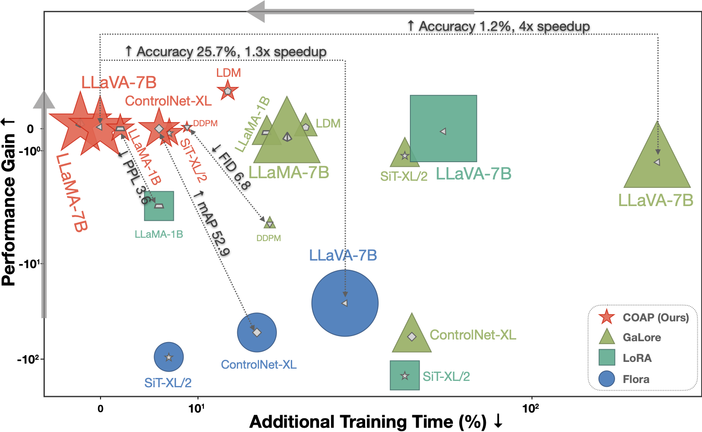 |
COAP: Memory-Efficient Training with Correlation-Aware Gradient Projection Jinqi Xiao, Shen Sang, Tiancheng Zhi, Jing Liu, Qing Yan, Linjie Luo, Bo Yuan CVPR 2025 [arXiv] [Project] |
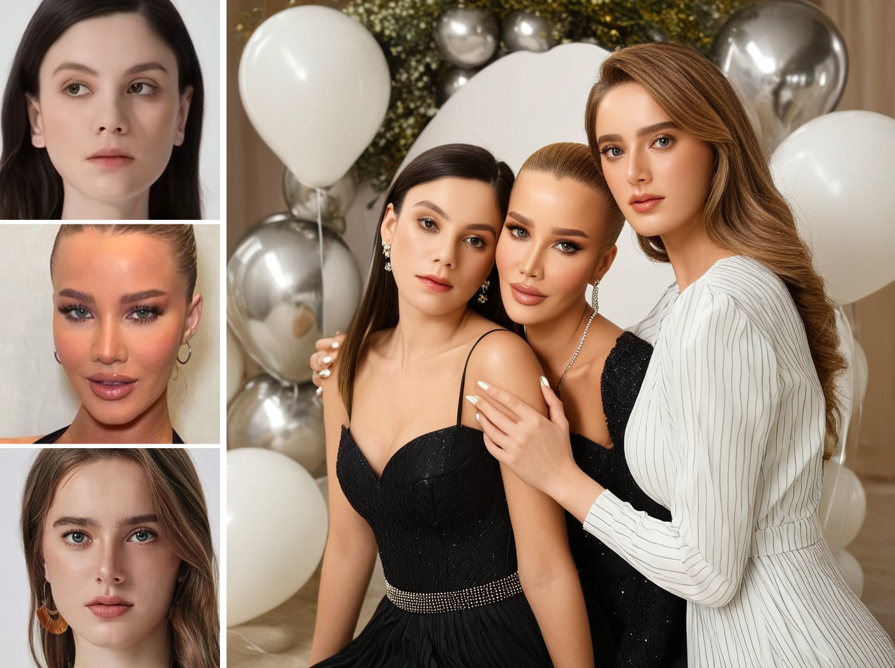 |
ID-Patch: Robust ID Association for Group Photo Personalization Yimeng Zhang, Tiancheng Zhi, Jing Liu, Shen Sang, Liming Jiang, Qing Yan, Sijia Liu, Linjie Luo CVPR 2025 [arXiv] [Project] |
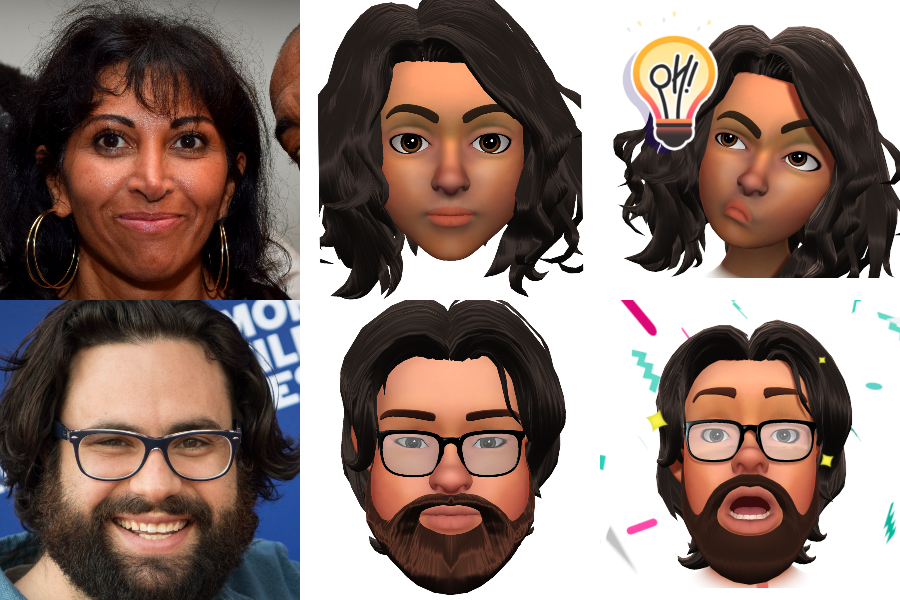 |
AgileAvatar: Stylized 3D Avatar Creation via Cascaded Domain Bridging Shen Sang, Tiancheng Zhi, Guoxian Song, Minghao Liu, Chunpong Lai, Jing Liu, Xiang Wen, James Davis, Linjie Luo SIGGRAPH Asia Conference Track 2022 [Paper] |
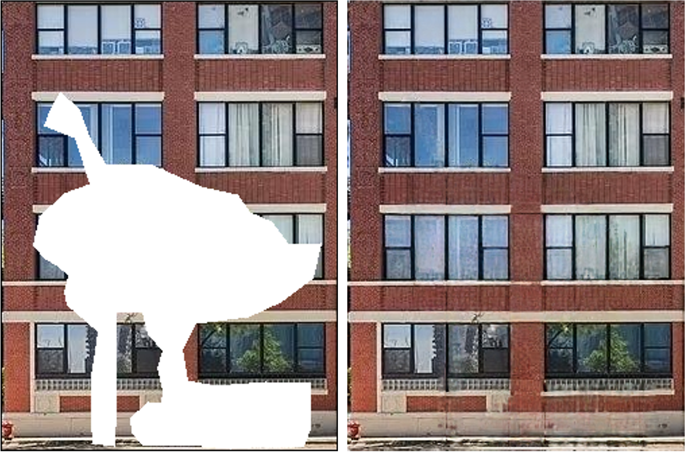 |
Learning Continuous Implicit Representation for Near-Periodic Patterns Bowei Chen, Tiancheng Zhi, Martial Hebert, Srinivasa G. Narasimhan ECCV 2022 [Paper] [Code] |
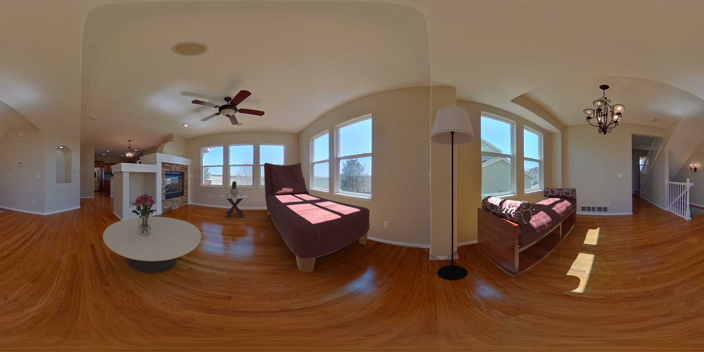 |
Semantically Supervised Appearance Decomposition for Virtual Staging from a Single Panorama Tiancheng Zhi, Bowei Chen, Ivaylo Boyadzhiev, Sing Bing Kang, Martial Hebert, Srinivasa G. Narasimhan SIGGRAPH Journal Track 2022 [Paper] [Project] [Code] |
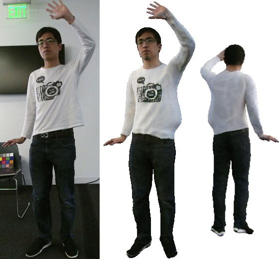 |
TexMesh: Reconstructing Detailed Human Texture and Geometry from RGB-D Video Tiancheng Zhi, Christoph Lassner, Tony Tung, Carsten Stoll, Srinivasa G. Narasimhan, Minh Vo ECCV 2020 [Paper] [Project] [Talk] [Data (please contact Minh Vo)] |
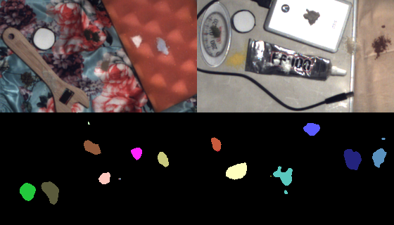 |
Multispectral Imaging for Fine-Grained Recognition of Powders on Complex Backgrounds Tiancheng Zhi, Bernardo R. Pires, Martial Hebert, Srinivasa G. Narasimhan CVPR 2019 Oral Presentation [Paper] [Project] [Code] [SWIRPowder Dataset] [Supp] [Talk] [Poster] |
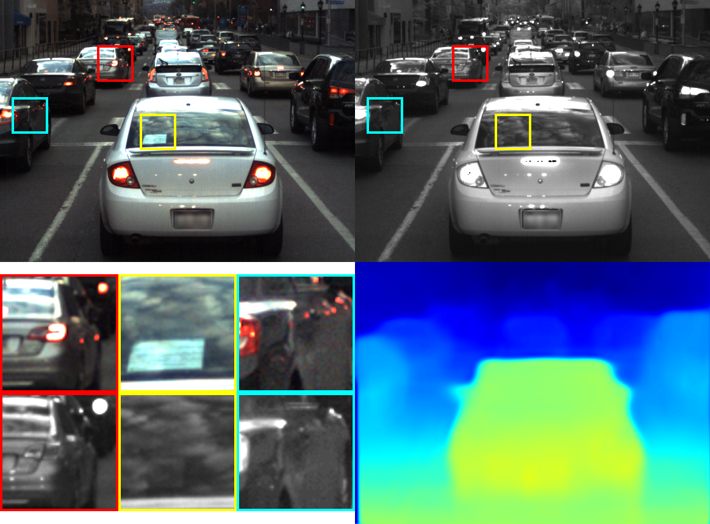 |
Deep Material-aware Cross-spectral Stereo Matching Tiancheng Zhi, Bernardo R. Pires, Martial Hebert, Srinivasa G. Narasimhan CVPR 2018 [Paper] [Project] [Code(v2)] [PittsStereo Dataset] [Supp] [Video] [Poster] |